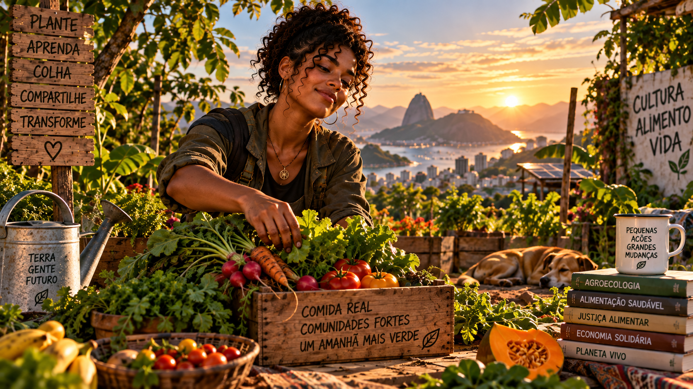
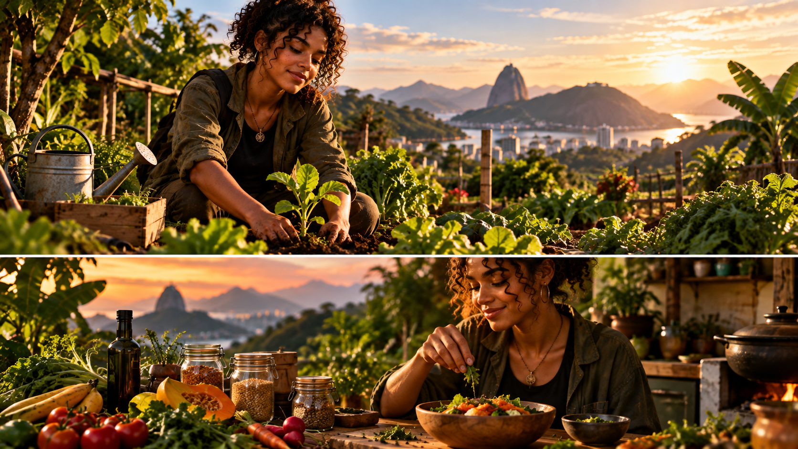

Por que precisamos voltar a cultivar — alimento, solo, água, território e autonomia para uma nova geração.
6 módulos24 aulasProjeto de 30 dias
0% concluído
Comece pela raiz
Produzir alimento também é compreender o mundo.
Este curso apresenta cultivo como conhecimento prático: observar ecossistemas, planejar recursos, reduzir desperdícios e criar pequenas respostas locais sem romantizar a complexidade da produção de alimentos.
🌱 Compreender solo, água, ciclos e alimento.
🧤 Experimentar um cultivo possível no seu espaço.
🗺️ Agir com um plano territorial de 30 dias.

MÓDULO 01
Reconectar com a comida
Entenda por que cultivar voltou a ser uma habilidade de futuro.
01. De onde vem o que comemos
Uma refeição conecta solo, água, sementes, trabalho, transporte, armazenamento e comércio. Mapear essa cadeia ajuda a perceber dependências e oportunidades locais.
Na prática
Escolha uma refeição comum e desenhe o caminho de cinco ingredientes até sua mesa.
02. Cultivar é conhecimento
Produzir alimento exige observação de clima, solo, ciclos biológicos, planejamento e cuidado. Horta não é nostalgia: é alfabetização ecológica aplicada.
Na prática
Liste três conhecimentos necessários para manter uma planta alimentícia viva por 60 dias.
03. Segurança alimentar
Ter alimento disponível não basta: acesso, qualidade, regularidade e capacidade de enfrentar crises também importam. Produção local pode complementar sistemas maiores.
Na prática
Identifique duas vulnerabilidades alimentares do seu bairro, escola ou família.
04. Jovens e território
Juventude pode conectar técnicas tradicionais, ciência, comunicação e tecnologia para criar soluções adequadas ao próprio território.
Na prática
Registre um problema do seu território que poderia melhorar com cultivo, compostagem ou organização comunitária.
Ferramenta prática
Registre descobertas deste módulo no seu Caderno de Cultivo e transforme observação em decisão.
MÓDULO 02
Solo vivo
Aprenda a tratar o solo como ecossistema, não como suporte inerte.
05. O que existe no solo
Minerais, matéria orgânica, água, ar, raízes, fungos e outros organismos formam um sistema vivo. Estrutura e biodiversidade influenciam infiltração e crescimento.
Na prática
Pegue duas amostras de solo e compare cor, cheiro, textura e presença de matéria orgânica.
06. Matéria orgânica
Resíduos vegetais podem retornar ao sistema como matéria orgânica, ajudando estrutura e retenção de água quando manejados corretamente.
Na prática
Separe por um dia quais resíduos orgânicos domésticos poderiam ter destino melhor.
07. Compostagem sem mistério
Compostagem combina materiais ricos em carbono e nitrogênio, umidade e oxigênio. Mau cheiro costuma indicar desequilíbrio ou falta de aeração.
Na prática
Monte um plano simples de composteira adequado ao espaço que você possui.
08. Cobrir para proteger
Solo exposto tende a sofrer mais com impacto da chuva, calor e perda de umidade. Cobertura vegetal ou palhada protege a superfície.
Na prática
Observe uma área de solo exposto e outra coberta e anote três diferenças.
Ferramenta prática
Registre descobertas deste módulo no seu Caderno de Cultivo e transforme observação em decisão.
MÓDULO 03
Começar a cultivar
Do planejamento ao primeiro canteiro, vaso ou horta.
09. Luz, espaço e água
Antes de escolher culturas, observe horas de sol, disponibilidade de água, drenagem e espaço. O projeto deve nascer das condições reais.
Na prática
Faça um mapa de sol de um espaço durante um dia.
10. Escolha de culturas
Clima, estação, ciclo, espaço e hábito alimentar orientam escolhas. Começar com poucas espécies facilita aprender.
Na prática
Selecione três culturas compatíveis com seu espaço e justifique.
11. Sementes e mudas
Algumas espécies são práticas por semeadura direta; outras funcionam bem por mudas. Profundidade, umidade e manuseio influenciam germinação.
Na prática
Crie uma pequena ficha de semeadura para uma espécie escolhida.
12. Rotina de cuidado
Irrigação, observação, capina seletiva, cobertura e registro tornam o cultivo um processo de aprendizagem contínua.
Na prática
Monte uma rotina semanal de 15 minutos para observar e cuidar do cultivo.
Ferramenta prática
Registre descobertas deste módulo no seu Caderno de Cultivo e transforme observação em decisão.
MÓDULO 04
Água e resiliência
Use água com inteligência e desenhe sistemas mais resistentes.
13. Água no solo
A água precisa infiltrar e permanecer disponível sem encharcar raízes. Textura, matéria orgânica, cobertura e drenagem alteram esse equilíbrio.
Na prática
Depois de regar, observe quanto tempo a superfície leva para secar em dois pontos diferentes.
14. Irrigação consciente
Horário, volume e frequência dependem de clima, recipiente, fase da planta e solo. Regar automaticamente por calendário pode desperdiçar água.
Na prática
Crie um critério de decisão para saber quando regar, baseado em observação.
15. Chuva como recurso
Captação de chuva pode reduzir demanda sobre água tratada, mas armazenamento e uso precisam ser seguros e adequados à finalidade.
Na prática
Desenhe um sistema conceitual de captação: telhado, condução, descarte inicial e armazenamento.
16. Diversidade gera resiliência
Diversificar espécies e épocas reduz dependência de uma única colheita e cria diferentes funções ecológicas.
Na prática
Planeje um pequeno cultivo com ao menos quatro espécies e funções diferentes.
Ferramenta prática
Registre descobertas deste módulo no seu Caderno de Cultivo e transforme observação em decisão.
MÓDULO 05
Da colheita à economia local
Entenda valor, perdas, processamento e circuitos curtos.
17. Colher no momento certo
Qualidade depende do ponto de colheita e do destino do alimento. Planejar consumo evita produzir algo que será desperdiçado.
Na prática
Escolha uma cultura e pesquise visualmente quais sinais indicam o ponto de colheita.
18. Desperdício é custo
Perdas significam solo, água, energia e trabalho utilizados sem gerar alimentação. Planejamento e conservação aumentam aproveitamento.
Na prática
Faça uma auditoria de desperdício alimentar por três dias.
19. Circuitos curtos
Venda direta, feiras, cestas e redes comunitárias podem aproximar produtor e consumidor, embora logística, escala e regularidade continuem importantes.
Na prática
Desenhe uma rota curta entre um produtor local e dez consumidores.
20. Valor além do preço
Alimento pode gerar renda, saúde, educação, vínculos e serviços ambientais. Avaliar um projeto exige olhar mais de um resultado.
Na prática
Crie cinco indicadores para medir o valor de uma horta comunitária.
Ferramenta prática
Registre descobertas deste módulo no seu Caderno de Cultivo e transforme observação em decisão.
MÓDULO 06
Cultivar o futuro
Transforme conhecimento em ação territorial.
21. Agricultura urbana e rural
Cidade e campo são complementares. Hortas urbanas educam e aproximam pessoas; áreas rurais sustentam produção em escalas e cadeias diversas.
Na prática
Compare vantagens e limites de um cultivo urbano e de um rural.
22. Tecnologia apropriada
Sensores, aplicativos e automação podem ajudar, mas tecnologia deve resolver um problema real e caber no contexto econômico e humano.
Na prática
Escolha um problema do cultivo e proponha uma solução simples antes de pensar em automação.
23. Comunidade e mutirão
Projetos coletivos precisam de responsabilidades, calendário, regras de uso e continuidade; entusiasmo inicial sozinho não sustenta uma horta.
Na prática
Defina cinco papéis para uma equipe jovem responsável por um espaço de cultivo.
24. Seu primeiro ciclo
Aprender agricultura é iterativo: planejar, plantar, observar, registrar, colher e ajustar. O primeiro ciclo é um experimento, não uma prova de perfeição.
Na prática
Escreva seu Acesso Beta de 30 dias com espaço, cultura, materiais, rotina e indicador de sucesso.
Ferramenta prática
Registre descobertas deste módulo no seu Caderno de Cultivo e transforme observação em decisão.

Projeto final interativo
Meu Primeiro Ciclo de Cultivo
Construa um plano pequeno, observável e executável. As respostas ficam salvas neste navegador.